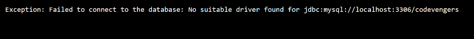

Write a Java program to manage the driver with path, username and password, if not successful then throw an exception
Code:-
import java.sql.Connection;
import java.sql.DriverManager;
import java.sql.SQLException;
class DatabaseManager {
public static void main(String[] args) throws ClassNotFoundException {
// Class.forName("com.mysql.jdbc.Driver");
String dbUrl = "jdbc:mysql://localhost:3306/codevengers";
String username = "root";
String password = "";
try {
Connection connection = new DatabaseManager().getConnection(dbUrl, username, password);
System.out.println("Connection successfull");
connection.close();
} catch (DatabaseConnectionException e) {
System.out.println("Exception: " + e.getMessage());
} catch (SQLException e) {
System.out.println("SQL Exception: " + e.getMessage());
}
}
Connection getConnection(String dbUrl, String username, String password) throws DatabaseConnectionException {
try {
return DriverManager.getConnection(dbUrl, username, password);
} catch (SQLException e) {
throw new DatabaseConnectionException("Failed to connect to the database: " + e.getMessage());
}
}
}
class DatabaseConnectionException extends Exception {
public DatabaseConnectionException(String message) {
super(message);
}
}
Output:-
